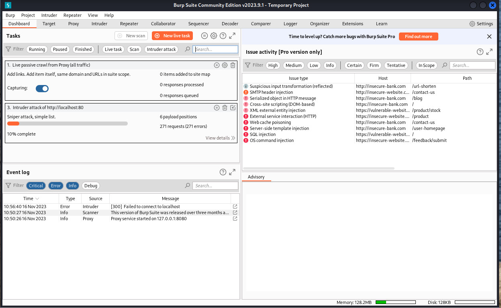

What is Burp Suite?
Burp Suite Community Edition is PortSwigger's free web application security testing toolkit. It acts as an intercepting proxy between your browser and the target — letting you inspect, modify, and replay every HTTP/HTTPS request in real time. It's the go-to tool for web penetration testing and is used in virtually every bug bounty and web CTF challenge.
kex &), Termux-X11, or TigerVNC before launching. On a PC or laptop with a desktop Kali install, it works directly. Additionally, Burp Suite requires a 64-bit device — it will not run on 32-bit hardware or 32-bit Android phones.
Before you install, pick your platform:
Installation
Two install paths — pick the one that matches your setup. Both need a desktop session running before you launch Burp.
On Kali and NetHunter (inside the Kali chroot), Burp Suite is in the official repos as burpsuite. One apt command installs everything.
$ sudo apt update
$ sudo apt install burpsuite -ynh or nethunter), not from the raw Termux shell. Then launch Burp from within your KEX or VNC desktop session.Once installed, launch from within your desktop session:
$ burpsuiteStep 1 — Install Java 17:
$ pkg update
$ pkg install openjdk-17Step 2 — Download the Burp Suite JAR:
$ wget "https://portswigger.net/burp/releases/download\
?product=community&version=latest&type=Jar" \
-O burp.jarStep 3 — Run it (from inside your GUI session):
$ java -jar burp.jarjava -Xmx1g -jar burp.jar — this caps heap at 1 GB and prevents crashes on mid-range devices.First Launch & Overview
When Burp Suite opens you'll see a startup wizard. For Community Edition, select Temporary project and click Next, then Start Burp. You'll land on the main dashboard.

The key tabs you'll use immediately:
| Tab | What it does |
|---|---|
Proxy | Intercept and modify live HTTP/HTTPS requests from your browser |
Repeater | Manually re-send and tweak individual requests — essential for testing |
Intruder | Fuzz parameters with wordlists (rate-limited in Community Edition) |
Decoder | Encode / decode Base64, URL, HTML, hex, and more |
Target | Site map — a tree of every URL and endpoint Burp has seen |
Logger | Full history of all proxied requests and responses |
To start intercepting traffic, go to Proxy → Intercept and make sure Intercept is On. Then configure your browser to proxy through 127.0.0.1:8080 — Burp's default listener address.
Troubleshooting
burpsuite: command not found
sudo apt update && sudo apt install burpsuite -y. If using Termux, make sure you're running the JAR method — Burp Suite is not available as a pkg package.cannot open display
kex &), Termux-X11, or TigerVNC first, then run burpsuite or java -jar burp.jar from a terminal inside that session.java -jar burp.jar — unsupported platform or architecture error
uname -m. If it shows armv7l or i686, Burp Suite cannot run on your hardware.java -Xmx1g -jar burp.jar. Close other apps first and make sure you have at least 2 GB of free RAM. On very low-end devices Burp may be too heavy to run reliably.